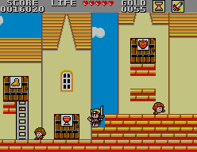

Master System - Wonder Boy
:::. Por Adinan - Artigo cedido pela equipe do QG Master, com adaptações. Clique aqui para ler o artigo original.
Saudações amigos! Aqui é o Adinan, e para o meu segundo post, quero falar sobre essa série de jogos que surgiu nos arcades, tendo seu auge no Master System, e que deixou muitas saudades. A série Wonder Boy/Monster World é uma das minhas prediletas, que começou com um ótimo jogo de plataforma, até evoluir tornando-se um excelente jogo de plataforma com elementos de Action RPG. Pretendo falar sobre a série, algumas curiosidades e, é claro, listar os ótimos jogos que compõem essa franquia esquecida pela SEGA.
Escape - Na pré-história da Terra dos Monstros
Em maio de 1986, Ryuchi Nishizawa e Michishisto Ishizuka fundaram uma empresa independente chamada Escape, referência a tecla ESC. Para desenvolverem seu primeiro jogo, a pequena empresa iniciou uma parceria com a SEGA, onde esta teria os direitos sobre os nomes e personagens dos jogos criados pela Escape, enquanto esta ficaria com os direitos de seus próprios códigos-fonte.
Assim, a Escape desenvolveu o primeiro game da série, Wonder Boy. Na pele do garoto maravilha das cavernas Tom-Tom, o jogador teria como objetivo salvar sua namorada Tanya, sequestrada por Drancom, um monstro de múltiplas faces. Com jogabilidade simples e viciante voltada a desafios rápidos e corrida constante contra o tempo, Wonder Boy teve bom sucesso. Antes de Sonic the Hedgehog ser criado, Wonder Boy era o jogo de plataforma mais voltado à velocidade.
O jogo foi lançado nos arcades, e logo em seguida ganhou uma versão para o SG-1000, bem diferente do original devido à restrições do console. Mais tarde, em março de 1987, o jogo ganharia uma versão para o Master System, batizada no Japão de Super Wonder Boy. O jogo é idêntico aos arcades, porém o "Super" seria para indicá-lo como uma versão diferente da do SG-1000. No ocidente o jogo é conhecido apenas como Wonder Boy.
O jogo original foi bem aceito, mas quem realmente brilhou foi seu clone para NES, Hudson's Adventure Island. Como a SEGA tinha apenas os direitos sobre os personagens e nomes, a Escape fez um contrato com a Hudson para criar um port de Wonder Boy para o Nintendinho, estrelando Takahashi Meijin, funcionário da Hudson famoso pelo seu 16-shot (habilidade de pressionar um botão 16 vezes por segundo). Como o NES era mais popular, e o jogo era tão bom quanto o original, Adventure Island vendeu 1 milhão de cópias só no Japão, e a Hudson criou uma franquia própria que trilhou um caminho pouco relacionado com a série original.
Westone e a Terra dos Monstros na Idade Média
Wonder Boy ajudou a Escape a firmar-se como uma empresa, e com isso adquiriram um escritório próprio, e um nome diferente: Westone. O nome era uma brincadeira com as primeiras letras dos fundadores (Nishizawa = West, Ishizuka = Stone). E com a nova empresa, não perderam tempo e criaram uma continuação para Wonder Boy.
Na época, os RPGs estavam ficando populares no Japão, e Nishizawa ficou encantado com a complexidade de jogos como Wizardry. Mas como um desenvolvedor de jogos de arcade, Nishizawa sabia que era impossível criar um jogo tão complexo e que rendesse em partidas rápidas. Assim, decidiu incluir elementos leves de RPG, mas mantendo o jogo rápido do Wonder Boy original.
O resultado final, Wonder Boy in Monster Land, não foi um sucesso logo de cara, mas à longo prazo conquistou os jogadores com seu mix de plataforma arcade e RPG. Com o tempo vendeu muito bem, e sabendo que o novo design faria mais sucesso em consoles, a Westone tratou de portar seu jogo para os video games domésticos. O Master System recebeu um excelente port, que pouco devia para o original, sendo um clássico e um dos jogos indispensáveis para o console. Enquanto no ocidente ele mantinha o mesmo nome do jogo de arcade, no Japão recebeu o nome de Super Wonder Boy: Monster World.
Outros desenvolvedores, sobre licença da Westone, portaram o jogo para computadores e outros consoles. No Famicom e no PC-engine, os personagens foram alterados, assim como no Wonder Boy original. Aqui no Brasil, Wonder Boy in Monster Land foi o primeiro de uma série de jogos alterados pela Tec Toy para agradar o público brasileiro. Assim sai Wonder Boy e entra a nossa querida dentuça para criar o clássico Mônica no Castelo do Dragão. Graças à qualidade do original e ao marketing agressivo (tem até uma história em quadrinhos, feita pelo Estúdio Maurício de Sousa, baseada no jogo), Mônica no Castelo do Dragão foi um sucesso óbvio, o que incentivou a Tec Toy a criar mais hacks no futuro.
Nos Arcades, a ovelha negra, no Master System, uma lenda
Nos arcades surge o terceiro game, Wonder Boy III: Monster Lair, um jogo cuja idéia era retornar à jogabilidade simples de Wonder Boy 1, mas com a temática medieval de Monster Land. O resultado foi um arcade legalzinho, e só isso, nada de especial...
Mas foi no Master que a série brilhou de verdade. Nishizawa decidiu criar um jogo menos arcade, mais complexo e sem perder os elementos de plataforma dos antecessores. Lembram que no Japão o segundo game do Wonder Boy ganhou o sub-título Monter World? Pois é, a continuação enterraria de vez a série Wonder Boy no Japão, criando assim uma nova série: Monster World. Assim nasceu Monster World II - Dragon no Wana, que foi localizado no ocidente como Wonder Boy III - The Dragon's Trap. O pessoal no Japão não sentiu nem o cheiro desse jogo pois o Master estava em seu leito de morte, tendo a possibilidade de jogar algum tempo depois no Game Gear. Nos EUA, apesar do sucesso na crítica especializada, a falta de popularidade do Master System dificultou a aceitação do jogo. Mas na Europa WB III foi um bom jogo capaz de manter o Master ainda mais popular.
O jogo pode não ter sido tão bem aceito graças ao fracasso do SMS nos territórios principais, mas os retrogamers reconhecem que o jogo é uma lenda. Existem sites dedicados à série Wonder Boy por causa desse jogo, sites dedicados exclusivamente a este jogo, e uma base fiel de fãs que consideram este o melhor jogo do Master System.
Claro que WB III não é perfeito, mas seu design é impressionante: em um mundo aberto no melhor estilo Metroid, o jogo recria a batalha final de Wonder Boy in Monster Land, porém o chefe final lança uma maldição ao herói, que se transforma em um lagarto que cospe fogo. Agora, o herói precisa encontrar a Cruz da Salamandra, o artefato capaz de remover o feitiço. Durante a sua jornada, o herói poderá adquirir novos equipamentos, aumentar sua barra de energia, e se transformar em outros animais, cujas habilidades permitem alcançar novos territórios de Monster World. Para um jogo de 8-bits, WB III era épico, um excelente rival tanto para Super Mario Bros quanto para Legend of Zelda.
O jogo foi licenciado para a Hudson, que criou um port quase idêntico com leves alterações nos personagens, e com o nome Dragon's Curse (curiosamente batizado de Adventure Island no Japão, sem nenhuma relação com o jogo original para NES). Já no Brasil, a Tec Toy aproveitou o sucesso do primeiro jogo da Mônica para criar Turma da Mônica em: o Resgate, outro clássico elogiado pelas revistas da época, bem recebido pelos jogadores, e incluído como bundle no Master System Girl.
Um adeus de Monster World para o Master System
A Westone decidiu aproveitar o sucesso do Mega Drive para criar o próximo jogo de Monster World. Wonder Boy V: Monster World III, ou Wonderboy in Monster World no ocidente. O mundo era ainda maior, as quests e a interação com os personagens tornavam Monster World ainda mais vivo e atraente, e o jogo adquiriu uma complexidade maior, mas com jogabilidade relativamente simples.
Porém, ofuscado pelo Blast Processing de Sonic the Hedgehog, WB in MW foi considerado antiquado pelos jogadores e pela crítica pela sua jogabilidade mais lenta em comparação aos jogos de plataforma que o Mega Drive possuía, mas foi considerado um ótimo game.
E cadê o Master System nessa história? Bom, na Europa o Master System continuou fazendo sucesso, assim WB in MW recebeu uma conversão para o SMS. Era uma versão mais light, com um mundo menor e alguns cortes devido às limitações do console, mas era um bom jogo para o Master.
WB in MW foi licenciado para a Hudson também, que criou o jogo Dynastic Hero, que possuía uma excelente trilha sonora de CD, mas com design de personagens questionável (o herói era um Mega Man com armadura de besouro ?!?). No Brasil, foi o último jogo da Mônica, batizado de Turma da Mônica na Terra dos Monstros. Não lembro se o jogo foi um sucesso, ao menos não lembro muito das propagandas sobre ele, mas acho que foi bem recebido, mas não com tanto sucesso como os jogos anteriores.
Adeus, bravo guerreiro. Adeus, Monster World...
No ocidente a série acabou em Monster World III, mas no Japão a série teve um último jogo, Monster World IV. Neste jogo, o protagonista era uma garota chamada Asha, e o mundo adquiriu uma temática árabe. O jogo ficou mais fácil, e perdeu aquela complexidade dos antecessores, ficando menos RPG e mais plataforma. A jogabilidade era muito melhor, mas o jogo se distanciava demais da série. Mas foi um excelente jogo que infelizmente ficou exclusivo no Japão.
Com isso a série Wonder Boy/Monster World chegou ao fim, e nunca mais foi lembrada pela SEGA. Bom, é verdade que no Japão a SEGA lançou uma coletânea para PS2, Monster World Complete Collection, contendo todos os jogos da série (com exceção dos clones, claro), mas depois de MW IV a série ficou esquecida, e a SEGA nunca deu a importância devida. Mas Wonder Boy e seu Mundo dos monstros estarão sempre nos corações dos jogadores fãs do Master System, do Mega Drive e da SEGA.
Acesse o Trombone e comente sobre essa matéria!


Um dos erros mais imperdoáveis da Sega. Em 90/91 mais ou menos, a Sega ganhou da Tecmo a oportunidade de fazer umas versões do Ninja Gaiden para os seus consoles. Essa chance é comparável ao que Deus fez quando deu o mundo para Adão... bem, o final tanto de Adão quanto da Sega nesse caso são semelhantes.
Albert Odyssey é um dos jogos mais amados pelos fãs do Saturn. Com uma história simples mas rica, dramatica e emocionante, encantou muita gente que naquele inicio da era 32 bits, ainda não estava acostumada com trilha sonora feita com instrumentos de verdade e gráficos cheios de luz e efeitos. Mas, não era para ser assim com esse jogo...